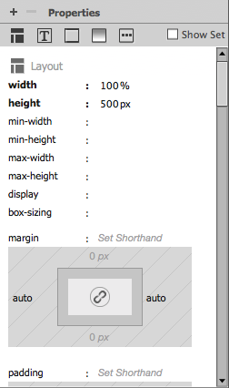
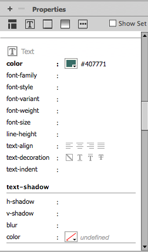
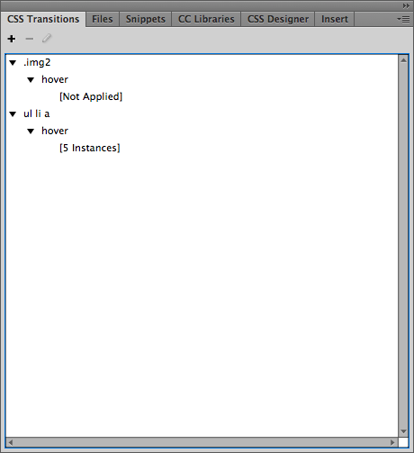
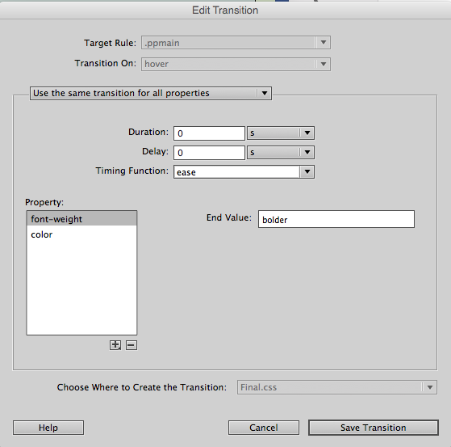

Dreamweaver Tutorial
Dreamweaver Tutorial (Part 2)
(Website theme and Color effects)
By: Joel Nonthe
Welcome to part two, using the skill you learned from part one to add color effect with sylesheets and interactivty. Also how to add videos :).
In part one you adjusted your boxes that would make up your header, body, footer. Using the same type of method you will change the apperance and colors.
The properties panel looks like this.

If you scroll down you can you can see Text section there you can make Adjustments to the text. In this case you will make a color change. Make sure the colors are ›visible and match your over all theme. An example would be like this website a dark or neon green or any green that is visible can be used.

As you can tell the color is the same as the one i am using now. Remember you can test other effects the best way to learn is hands on and it never hurts to try.
Now we will add interactivity when your visitors using the site browse your page they look and enjoy interactivity. This helps the feel and the success of your site. We will now add interactivity so that when you hover over text it changes colors.
First thing is locate CSS Transitions panel normally it would be in the top right hand corner. It looks like this.

The next step is click the plus sign

Make sure to choose the exact name of the div you want to access and what you want to change you. Once you choose which div you can copy the rest so it acts the same your text should change color now.